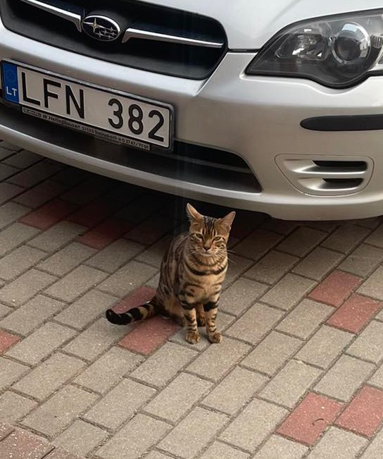

Sveiki atvykę!
Esu Justinas – mano hobis yra automobiliai. Pagrinde domiuosi Subaru marke, bet kaip ir kiekvienas eilinis Subaru fanas – svajoju apie EVO 😄.
Šioje svetainėje bus ne tik automobilių, bet ir kačių nuotraukų 🐾. Mano katinas puikiai prisitaikęs prie automobilių aplinkos ir yra tikras garažo sargas – nė vienas projektas nepraslysta be jo inspekcijos.

Garažo katinas. Nusivylęs. Dar vienas Subaru.